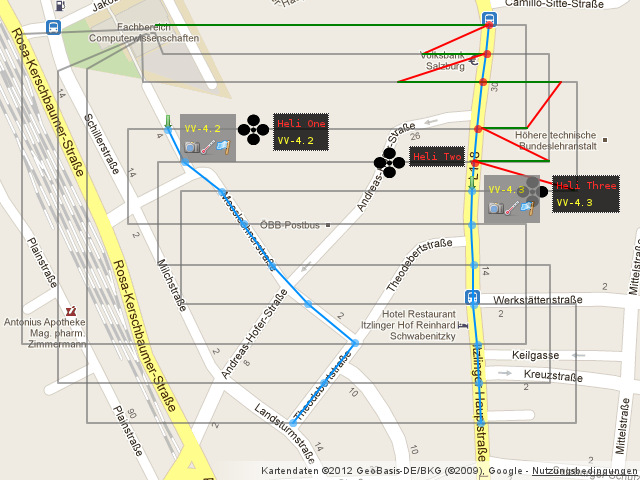
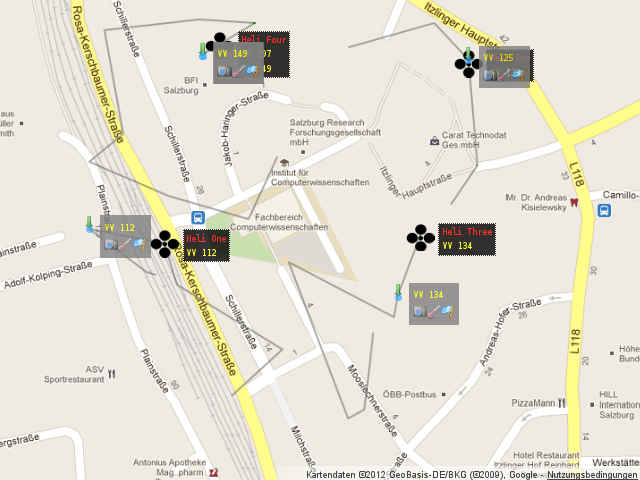
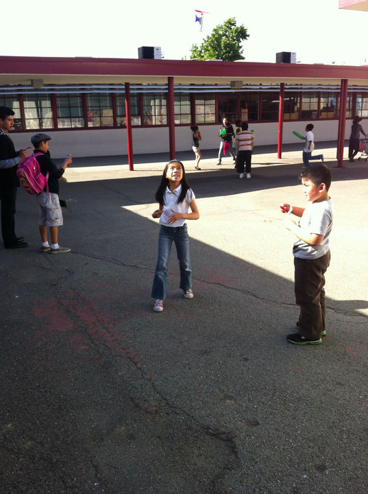
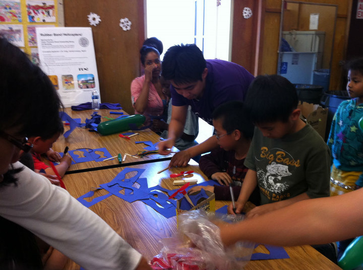
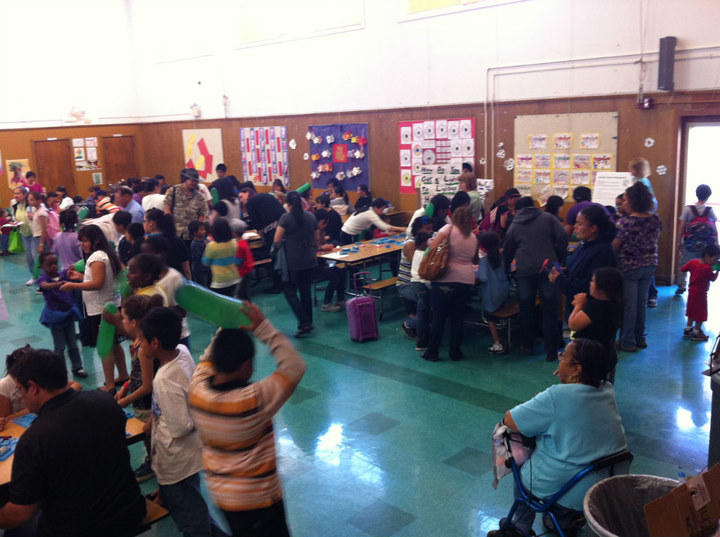

J. Huang and R. Sengupta, Risk and Reward in Spatial Queuing Theory.[pdf]
J. Huang and R. Sengupta, Management of Spatial Queuing Systems: The Case of Gated Policies.[pdf]
L. Zhang and R. Sengupta, Distributed Kalman Consensus Filters for Distributed Parameter Systems with Unknown Boundary Conditions.[pdf]
S. Craciunas, J. Love etc., Information-Acquisition-as-a-Service for Cyber-Physical Cloud Computing.[pdf]
J. Love etc., CSL: A Language to Specify and Re-Specify Mobile Sensor Network Behaviors.[pdf]
J. Love, Network-Level Control of Collaborative UAVs.[pdf]
C. Kirsch etc., Cyber-Physical Cloud Computing: The Binding and Migration Problem. [pdf]
1. Static Flight Plan Demo.
In this demonstration three Real Vehicles (RVs) fly along their set courses and four Virtual Vehicles (VVs) collect data at several locations. Each RV provides the same set of sensors: a belly mounted camera, a thermometer, and a barometer.
The blue lines in Picture demo4-all-VVs.png display the virtual paths of the VVs. Circles along the VV paths indicate Action Points (APs). Blue APs visualize that sensors values need capturing. Red APs show that all sensor values have been collected.
Green downward arrows display an active AP. To the right of each arrow, it is a grey rectangle that shows the name of the according VV and the sensors left to process. The pictured APs show the icons of a camera, a thermometer, and a barometer that need processing.
Initially, the VVs idle on the central Engine and wait for the mapping algorithm to assign an eligible RV. The algorithm considers the current flight plan segments of the RVs. If the current AP of a VV is on a RV's flight plan segment, the algorithm initiates a migration of this VV to the RV. If there are several RVs to choose for migration, the algorithm takes the RV that will reach the AP at first. After a VV has completed its mission, i.e., all APs have been processed, the mapping algorithm initiates a migration back to the central Engine.
Picture demo4-snapshot.png shows an advanced stage of this demonstration mission displaying two VVs in action. Green lines show VVs carried by RVs and red lines indicate migrations of VVs among RVs.
Gated Traveling Salesman Policy
In this demonstration four Real Vehicles (RVs) are assigned to separate square cells. The cells are:
Cell 1: Latitude from 47.82202396 N to 47.82376633 N and longitude from 13.03839827 E to 13.04082245 E.
Cell 2: Latitude from 47.82202396 N to 47.82376633 N and longitude from 13.04082245 E to 13.04324663 E.
Cell 3: Latitude from 47.82028159 N to 47.82202396 N and longitude from 13.03839827 E to 13.04082245 E.
Cell 4: Latitude from 47.82028159 N to 47.82202396 N and longitude from 13.04082245 E to 13.04324663 E.
The RVs are assigned to the cells as they register with the Mapper web application and each RV serves one cell exclusively and independently. The depot of the each RV is the center of its assigned cell.
Each RV serves the Virtual Vehicle (VV) Action Points (APs) its own cell according to a gated-TSP policy as follows:
(1) With no APs to process, the RV returns to its depot and waits there for new APs to appear.
(2) With APs to process, the gated-TSP mapping algorithm takes a snapshot of the unprocessed APs in a RV's cell and calculates a TSP tour of those APs and assigns a new flight plan to the RV. The first waypoint of this tour is the current position of the RV and the last waypoint is the RV's depot position. While RVs fly their calculated tours, the mapping algorithm ignores any newly arriving APs in the according cells.
(3) After reaching the last AP of it's tour, a RV returns to its depot if no more APs are to be processed (step 1) or continues to process APs (step 2).
In this demonstration a small script creates 199 VVs with one randomly generated action point within the given cells and uploads the VVs to the central engine according to a Poisson process with arrival rate of one VV per 5 seconds.
In Picture demo5-snapshot.png and Video demo5-gated-tsp.avi green downward arrows display an active AP. To the right of each arrow, it is a Gray rectangle that shows the name of the according VV and the sensors left to process. The pictured APs show the icons of a camera, a thermometer, and a barometer that need processing.
Initially, the VVs idle on the central Engine and wait for the mapping algorithm to assign an eligible RV. The algorithm considers the current flight plan segments of the RVs. If the current AP of a VV is on a RV's flight plan segment, the algorithm initiates a migration of this VV to the RV. After a VV has completed its mission, i.e., all APs have been processed, the mapping algorithm initiates a migration back to the central Engine.
Picture demo5-snapshot.png shows an advanced stage of this demonstration mission displaying four VVs in action. Green lines show VVs carried by RVs and red lines indicate migrations of VVs among RVs.
- Black: physical helicopters (RVs).
- Green Lines: VVs carried by physical helicopters.
- Red Lines: VV cyber moves.
- Blue Lines: intended VV paths.
- Grey Lines: physical helicopter set courses.
- Blue Circles: not completed VV action points, i.e., unfinished data collection.
- Red Circles: completed VV action points, i.e., all data collected.
- Yellow Text: names of active VVs.
- Red Text: names of flying helicopters.
Cal Day is U.C. Berkeley's annual open house event where perspective students, families, friends, and the general public come to visit and learn about what's happening on campus and enjoy fun activities different university affiliated groups host. We decided to participate in the Cal Day event in order to give back to the community and display some of the work our undergraduates have been doing in the Cyber Physical Cloud Computing (CPCC) group. One of our objectives was to be able to entertain visitors of all ages so that everyone would be engaged in some meaningful way when they visit our station. Another objective we had was to increase people's awareness of new technologies on the market and how accessible they are. To achieve this, we hosted a rubber band activity for the younger kids and we let the parents, and anyone else who is interested, test fly the AR Drone quadcopters – a commercially available platform our undergraduates use for research. We also made a poster that reflect the different activities we had planned and give viewers a bit more detail about our undergraduates' work with the AR Drone with ROS (Robot Operating System) and OpenCV (C++ image processing library).
On the day of the event both the AR Drones and the rubber band helicopter activity were very popular. Parents and children were fascinated with the drones because for many, it was their first time seeing a real flying quadcopter. They were very excited when we told them that they could actually fly them; some of them were surprised by how affordable and accessible these drones have become. The younger kids seemed to really like the rubber band helicopters and were amazed how high they went. The kids were very inquisitive and were eager to try different fuselage form factors to see what effects it has on the performance of the rubber band helicopters.
Overall, the event was pretty successful. Over the span of two hours we always had a small crowd around our booth with people who are eager to try out the AR Drone and learn about what we do. Roughly 30 kids participated in the rubber band helicopter activity. One aspect we could have improved on was to get a better location for our booth because we were not on the main guided route the department planned. On the other hand, not having an overwhelming number of people around our booth meant people had more space to maneuver the AR Drone without fearing that they were going to crash into people.
The Franklin Elementary school's annual science fair was held on May 10th 2012. The science fair features a variety of science related activities for over a hundred elementary school students and their parents hosted by teachers and invited guests. Some of the activities that were present include Van de Graff generators, completing the light circuit, balloon racing and more which explore a multitude of scientifically relevant concepts such as electricity, air pressure, speed etc. Our participating in this event through hosting the simple rubber band helicopter activity broadened the scope of the event by adding concepts such as lift, drag, stored energy, and flight and promoting outdoor activities to the younger generations who are so attached to indoor activities such as console gaming and internet browsing.
The activity was very popular and attracted many students and parents. Because of the simplicity of the activities, students quickly picked up on the basics of building the helicopter and started to experiment with different variables such as winding number and toss angle to see how the helicopter behaved. We also encouraged the students to explore different form factors for the helicopter to see how that affects the flight characteristics. Though the students are young and sometimes unable to grasp the technicalities of these activities, they were able to develop intuitions for how systems would behave when something is changed through hands on experimentation. Many of the parents express that the rubber band helicopter activity was very engaging. Over all, the demand for the activity was high and we were happy to be a part of our younger generations' learning, enrichment experience.

C. Kirsch etc., Cyber-Physical Cloud Computing: The Binding and Migration Problem. [pdf]
J. Love, Network-Level Control of Collaborative UAVs.[pdf]
S. Craciunas, J. Love etc., Information-Acquisition-as-a-Service for Cyber-Physical Cloud Computing.[pdf]
J. Love etc., CSL: A Language to Specify and Re-Specify Mobile Sensor Network Behaviors.[pdf]
Center for Collaborative Control of Unmanned Vehicles (C3UV)
The Computational Systems Group at the University of Salzburg